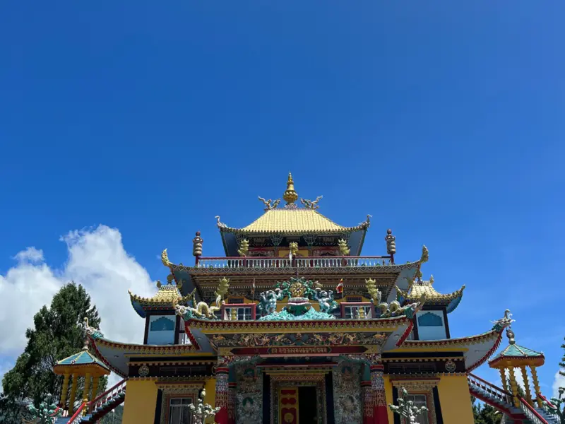
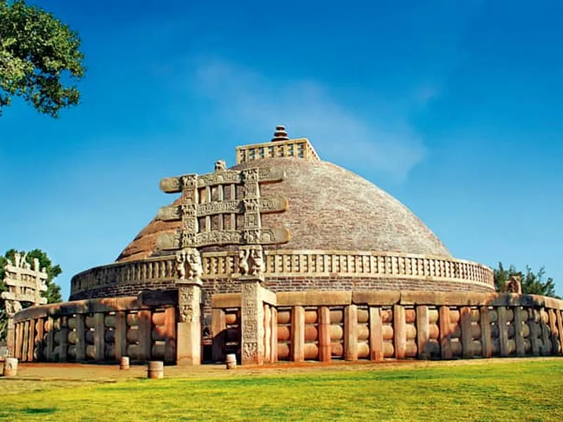
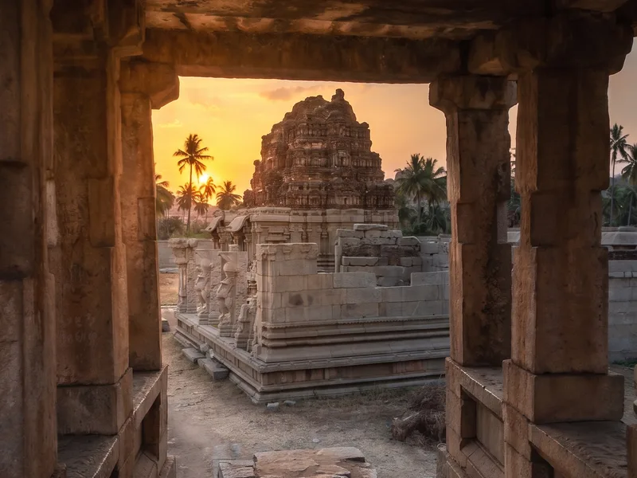

Plan your escape.
Every journey below is escorted by someone from Zubilant who has done the route. We print the drive lengths, the altitude and the nearest hospital, because those are the facts that decide whether a trip suits your group.
59 journeys

Kashmir in Tulip Season
Six nights across Srinagar, Gulmarg and Pahalgam in the fortnight the tulips are actually out, with a houseboat night your children will talk about for years.

Ladakh by Road
Nine days over the high passes to Nubra and Pangong, at a pace that lets everyone sleep well at altitude, oxygen in every vehicle, doctors' numbers in every driver's phone.

Kerala Backwaters, Slowly
Seven unhurried nights from Kochi through Alleppey to Kumarakom and the hills, a houseboat, a spice garden, and afternoons with nothing in them, on purpose.

Rajasthan for First-Timers
Jaipur, Jodhpur, Jaisalmer and Udaipur in eight nights, the right four cities in the right order, with the forts before lunch and the markets after tea.

Spiti: The Middle Land
Eight days through the high desert between Shimla and Manali, Key monastery, Asia's highest villages, and roads your friends will not believe.

Sikkim & Darjeeling in Bloom
Seven nights from the toy train to the rhododendron valleys, Darjeeling, Gangtok and Yumthang in April, when the hillsides do something unreasonable.

Varanasi & the Ganga
Four nights on the oldest street in India, dawn boats, the evening aarti from the water, Sarnath, and enough time between them to let the city work on you.

Assam: Tea, River, Island
Six nights from Jorhat's tea bungalows to Majuli, the world's largest river island, mask-makers, satras, one-horned rhinos at Kaziranga.

Andaman, Unhurried
Six nights across Port Blair, Havelock and Neil, Radhanagar at sunset, snorkelling taught gently, and the Cellular Jail's story told the way it deserves.

Dwarka & Somnath by Road
Five nights along Gujarat's temple coast, Dwarkadhish and Somnath with darshan arranged and queues managed, Beyt Dwarka by boat, and the Gir lions in between.

Himachal Classic: Shimla, Manali & the Old Hindustan Road
Seven nights from Shimla to Manali along the old Hindustan–Tibet road, timed for the two windows, May–June and October, when the hills are green, the passes are open, and the crowds are thinner than you think.

Uttarakhand: Char Dham by Road
Ten nights on the full Yamunotri–Gangotri–Kedarnath–Badrinath circuit by road, paced for pilgrims who want to complete the yatra properly, with a helicopter option for Kedarnath for those who should not attempt the climb.

Rishikesh & the Ganga Foothills: A Wellness Week
Six nights of yoga, river and quiet in and above Rishikesh in the cool October-to-March season, a wellness week built around one good ashram-style routine, not a spa menu.

Valley of Flowers & Hemkund
Seven nights built around the July–August monsoon bloom, trekking into the Valley of Flowers at its absolute peak and up to Hemkund Sahib at 4,300 metres, with the rest days most operators skip.

Ranthambore & the Wild East of Rajasthan
Four nights at Ranthambore with three properly booked safaris in the October–April season, plus an unhurried Jaipur day on the way in, tigers first, forts second.

Thar Under Canvas: Desert Rajasthan Glamping
Four nights split between Jaisalmer's golden city and a luxury desert camp deep in the Thar, proper beds under canvas, dune sunsets without the day-tripper circus, November to February only.

Meghalaya: Living Root Bridges & the Wettest Place on Earth
Six nights through Shillong, Cherrapunji, Mawlynnong and the crystal water at Dawki, including the descent to a living root bridge that is the whole point, in the clear October–April season.

Tawang & the High Monasteries of Arunachal
Eight nights on the great road from Guwahati through Dirang to Tawang and its 17th-century monastery, over the 4,170-metre Sela Pass and back, in the clear windows of March–April and October–November.

Rann of Kutch: The White Desert in Festival Season
Five nights from Bhuj to the white salt flats of Dhordo and the sea at Mandvi, timed for the Rann Utsav and the full-moon nights when the desert turns silver.

Amritsar & Punjab: Golden Temple, Border, Table
Four nights in Amritsar built around the Golden Temple at its quietest hours, the Wagah border ceremony done properly, and the best eating city in North India taken seriously.

Khajuraho, Orchha & the Bundelkhand Road
Five nights through Bundelkhand's great stone country, the Khajuraho temples read properly, Orchha's river-side cenotaphs at sunset, and roads most tourists never take.

Bandhavgarh & Kanha: Tiger Country Proper
Six nights and six safaris across Bandhavgarh and Kanha, the two parks where tiger sightings are earned by density, not luck, with naturalists who read the forest, not just the radio.

Goa Beyond the Beach
Five nights of the Goa most visitors never find, the Latin quarter of Fontainhas, spice farms, ferry-only Divar island and the old churches, with beach afternoons kept sacred.

Coorg & Mysuru: Coffee Country
Five nights from Mysuru's illuminated palace to the coffee estates of Coorg, with elephants at Dubare and mornings that smell of roasting beans.

The Nilgiris by Toy Train: Ooty, Coonoor & the Blue Hills
Five nights in the Nilgiris built around the UNESCO-listed mountain railway, ridden the right way, in the right direction, with tea gardens, colonial Ooty and quiet Coonoor.

Madurai to Rameswaram: The Deep South Temple Road
Six nights down the great temple road of the deep south, Madurai's Meenakshi at night, Chettinad's mansions and cuisine, Rameswaram's corridors, and land's end at Kanyakumari.

Pondicherry & the Chola Trail
Five nights from the French Quarter of Pondicherry down the Chola heartland, Auroville, Chidambaram and the great temple of Thanjavur, at the unhurried pace this coast deserves.

Odisha: Puri, Konark & the Quiet Coast
Five gentle nights through Jagannath darshan at Puri, the Sun Temple at Konark, Chilika's dolphins and the artist village of Raghurajpur, Odisha done properly, without the crowds it never gets anyway.

Lakshadweep: The Lagoon Islands
Five nights on Agatti and Bangaram, India's clearest water, entry permits handled entirely by us, and lagoons that answer the question of why anyone flies four hours further to the Maldives.

Ayodhya, Prayagraj & Chitrakoot: The Ram Path
Five nights along the Ram path, darshan at Ayodhya's new mandir, the Sangam at Prayagraj and the forest quiet of Chitrakoot, paced for elders and managed so the queues never manage you.

Gulmarg in Winter: India's Ski Story
Five nights in Gulmarg between January and March, built around a proper beginners' ski school, the family ski holiday that usually means Europe, at a fraction of the cost and eight time zones closer.

Hampi & Badami: The Stone Empire
Five nights among the ruins of Vijayanagara and the cave temples of Badami, timed for the cool months and the low sun that photographers cross the world for.

Wayanad & the Malabar Coast
Six slow nights through Kozhikode's legendary food streets, the plantation hills of Wayanad and Kannur's theyyam season, the Kerala that the backwater brochures never reach.

Nagaland: Hornbill Festival & the Naga Hills
Six nights around the first week of December, the Hornbill Festival at Kisama, the villages above Kohima, and Khonoma, Asia's first green village, with the permits, beds and logistics that make or break this trip handled before you land.

Kumbakonam & the Cauvery Delta: Temples of the Cholas
Five nights deep in the Cauvery delta, Kumbakonam's living temple towns, the two quieter Great Chola temples, and the Danish surprise of Tranquebar, the Tamil heritage circuit for travellers who have already done the obvious.

Japan in Cherry Blossom Season
Eight nights from Tokyo to Osaka by rail through Hakone and Kyoto, timed for the two weeks the blossom actually holds, with a November foliage departure for those who cannot get April leave.

Vietnam North to South
Seven nights down the length of Vietnam, Hanoi, an overnight cruise on Ha Long Bay, lantern-lit Hoi An and Ho Chi Minh City, on the easiest visa in Asia.

Bali Beyond the Pool Villa
Six nights across Ubud's rice terraces, the quiet Sidemen valley and the Uluwatu cliffs, the Bali underneath the Instagram version, on a visa stamped at the airport.

Bhutan: The Kingdom Next Door
Six nights through Thimphu, Punakha and Paro, ending with the climb to Tiger's Nest, the Himalayan kingdom Indians can enter without a visa, and mostly don't.

Nepal: Annapurna Foothills on Foot
Eight nights built around a four-day teahouse trek through Ghandruk to Poon Hill, sunrise over Annapurna and Dhaulagiri on foot, no visa, no flight paperwork, no mountaineering required.

Sri Lanka: The Full Island
Seven nights from Sigiriya's rock fortress through Kandy and the hill-country train to Ella, ending on the ramparts of Galle, the whole island, on a visa that costs Indians nothing.

Dubai & Abu Dhabi Done Properly
Five nights across Dubai and Abu Dhabi that trade a third mall visit for the creek dhows, a desert evening, and the Louvre, the version of the Emirates worth flying for.

Kenya: The Masai Mara Migration
Six nights from Nairobi deep into the Masai Mara for the July-to-October migration window, closing at Lake Naivasha, the once-in-a-lifetime trip, planned so it actually delivers once in a lifetime.

Thailand for Families: Bangkok, River Kwai & the Gulf
Six nights across Bangkok, the River Kwai and a Gulf beach, the family Thailand of temples, floating markets and a train ride through history, timed for the cool season and with no visa to arrange at all.

Singapore & Malaysia: The Easy First Passport Stamp
Six nights across Singapore, Kuala Lumpur and the Genting highlands, the classic first international trip, engineered so that nobody in the family, from seven to seventy-seven, has a hard day.

Switzerland & Paris: Europe for First-Timers
Eight nights from Interlaken to Lucerne to Paris by rail, the Jungfrau, the lakes and the Eiffel Tower without a single airport in between, on the trains the Swiss themselves use.

Georgia & Azerbaijan: The Caucasus Road
Seven nights overland from Baku's flame towers to the Kazbegi mountains via Sheki and Tbilisi, two countries, one road trip, and an e-visa you can get from your sofa in three days.

Almaty & the Kazakh Mountains
Six nights out of Almaty to Charyn Canyon, the Kolsai lakes and Big Almaty Lake, Central Asia's most underrated mountain country, visa-free for Indians and four hours from Delhi.

Mauritius, Unhurried
Six nights across the island's north and south, Chamarel's coloured earth, a catamaran day on real water, and enough unscheduled beach to remember why you came. Visa-free for Indians.

Australia & New Zealand: The Big Trip
Twelve nights from Sydney's harbour to the Great Barrier Reef to Queenstown and Milford Sound, the once-in-a-lifetime southern journey, done in their summer, at a pace that lets you actually be there.

Iceland: Ring of Fire & Ice (with the Diamond Circle)
Eight nights around Iceland's greatest hits and past them, the Golden Circle and the black-sand south, then north to the Diamond Circle most tours never reach, with the northern lights hunted properly in season.

The Golden Triangle: Delhi, Agra & Jaipur
Five nights across Delhi, Agra and Jaipur in the cool months, built around one thing most tours fumble: standing in front of the Taj Mahal at sunrise, before the day arrives.

Maldives, Unhurried
Four nights on one good island, doing very little, extremely well: the honeymoon trip for couples who understand that the Maldives is not a sightseeing destination.

Phuket & Krabi: Thailand's Islands
Six nights split between Phuket and Krabi with the islands done by early boat, Phang Nga Bay before the flotillas arrive, and afternoons left honestly free.

Turkey: Istanbul & Cappadocia
Seven nights across Istanbul and Cappadocia: Hagia Sophia and the Bosphorus done at the right hours, and two dawn chances at the balloons, because one is a gamble.

Egypt: Cairo & the Nile
Seven nights from the pyramids of Giza to a proper four-night Nile cruise, Aswan to Luxor, sailing the river the way Egypt has always been meant to be seen.

Tirupati & Tirumala: Darshan Done Right
Three nights built around one thing: a managed, unhurried darshan at Tirumala, with Srikalahasti and Chandragiri Fort filling the days without crowding them.

Jim Corbett & Nainital
Two nights in India's oldest national park with proper dawn safaris, then two nights in Nainital around the lake: the classic first wildlife trip for a family.

Vaishno Devi: The Climb to the Shrine
Three nights built around the 13-kilometre climb from Katra to the Vaishno Devi shrine, with every honest way up, foot, pony, palanquin or helicopter, named and arranged in advance.
Nothing here quite right?
Every one of these started as a bespoke request. Tell us what you have in mind and we will design it.